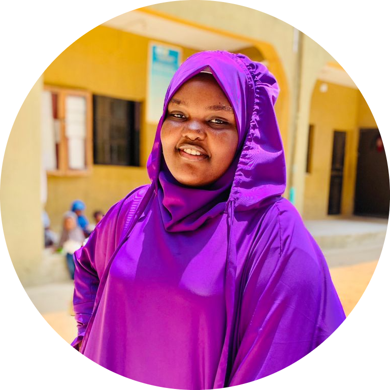

ABOUT SEKINAH

My name is Alarape Sekinah Motunrayo.I'm fourteen years old.I hails
from
Kwara State Babaita to be precised
.I attendsThe Sublime College at Cele nica.I'm four feet tall,
i'm dark in complexion and plumpy in size.I lives with my loving parents and siblings.
My dad is a naval officer and my mother is a trader .No one can reach the stage in life
where i stand at this moment ,without the unwavering support of family and friends.
Infact,everything i'm achieving in my life is because of my parents and siblings.
We are four sisters and two brothers and i'm the fourth born.Reading is my hobby
and i spends most of my time reading novels and story books.Plus,i have a keen intrest in tech.
other than that,i also try to take part in games and some times i stay indoor studying and solving some
maths problems and listening to Qu'an. One thing about me is that i am an introvert.My bestfriends are Zainab[Zeebabe]
and Fatimah[Zahra].We are three best friends and we do love each other.
My favourite food is fried rice and chilled juice.My favourite color is Purple.
I love purple so dearly because it is a sign of freedom,happiness and joy.
My favourite subjects are maths,chemistry,biology
and physics..I am a mathematician,Yes i love mathematics because when
it comes to maths ,i dont joke with it unless if am not in the mood to solve or dosen't have any idea about it.
If i don't have any idea about it,i will even try my best and not relenting.
The reason why chemistry is among my favourite subject is because of the educator who educates me
There is a quote which says
"If you hate a teacher,definately you will fail his subject but if you like
a teacher,you will you will surely like or pass his subject".That is exactly why chemistry is part of my favourite subject but i can say am also
good in chemistry very well but not perfect.The reason why i like biology is because it's the study of life.
it's nature,understandable and it makes one reason logically.Like i said earlier that i am a mathematician,,
that's what makes me a physician because physics is all about calculations and formulaes so that's
what makes phycics my favourite subject.My favourite quote is
Success is most often achieved by
those who don't know that failure is inevitable.
-coco chanel.
Even though no one can be described in just few sentences,have done
my best to write something meaningful about myself.